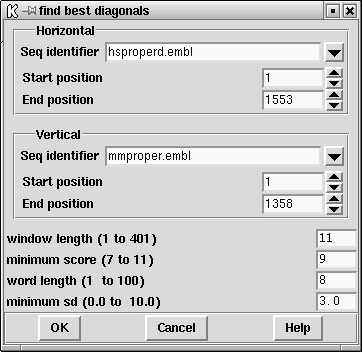

This option is among the fastest and can be useful for a quick comparison of two long DNA sequences. The algorithm is as follows. First it finds the positions of runs of identical characters ("words") of length word length, as for the find matching words algorithm. These words are accumulated in an imaginary SPIN Sequence Comparison Plot and the number of hits on each diagonal is summed to produce a histogram. The histogram is analysed to find its mean and standard deviation. The diagonals that lie above some cutoff score (defined in standard deviation units), are rescanned using the find similar spans algorithm. Any window lengths reaching the cutoff score produce a dot which is plotted in the usual way.

The dialogue box requests horizontal and vertical sequences and their ranges ( see section Selecting a sequence), the minimum number of identical characters in a run "word length", the minimum standard deviation, the window length and the minimum score.
The points are plotted to the SPIN Sequence Comparison Plot ( see section SPIN Sequence Comparison Plot).
Further operations available for find best diagonals are:
horizontal EMBL: hsproperd vertical EMBL: mmproper window length 11 minimum score 9 word length 8 minimum sd 3.000000
Positions 1066 h 905 v Positions 1067 h 906 v Positions 1068 h 907 v Positions 1069 h 908 v Positions 1070 h 909 v Positions 1071 h 910 v Positions 1072 h 911 v Positions 1073 h 912 v Positions 1074 h 913 v